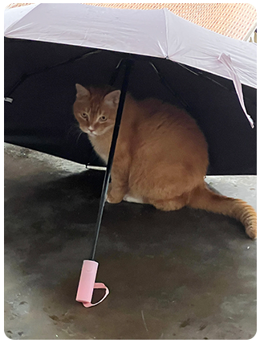
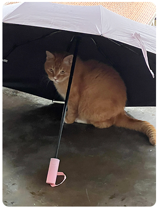

jing really loves cats. she will take so many pictures and videos whenever she sees a cat. sadly her parents are against the idea of raising a cat at home so she is waiting for the time when she moves out to raise one or ten of her own. the life of being a cat lady does not seem so bad to her.
 


when it comes to music, jing loves listening to pop, r&b, korean, chinese, and rap. she is a big fan of ariana grande and olivia rodrigo, hoping that one day she can go to their concerts. recently, she started listening to taylor swift and loves a lot of her songs as well. when her favorite songs are playing, she will sing without hesitation.
jing also loves playing video games. she discovered video games from a young age and never stopped playing since then. the few games jing first played were battlefield on the xbox 360 and wizard101. then, she transitioned to league of legends but had to stop playing because it ruined her mental health. currently, she mainly plays competitive fps games such as overwatch2 and valorant.